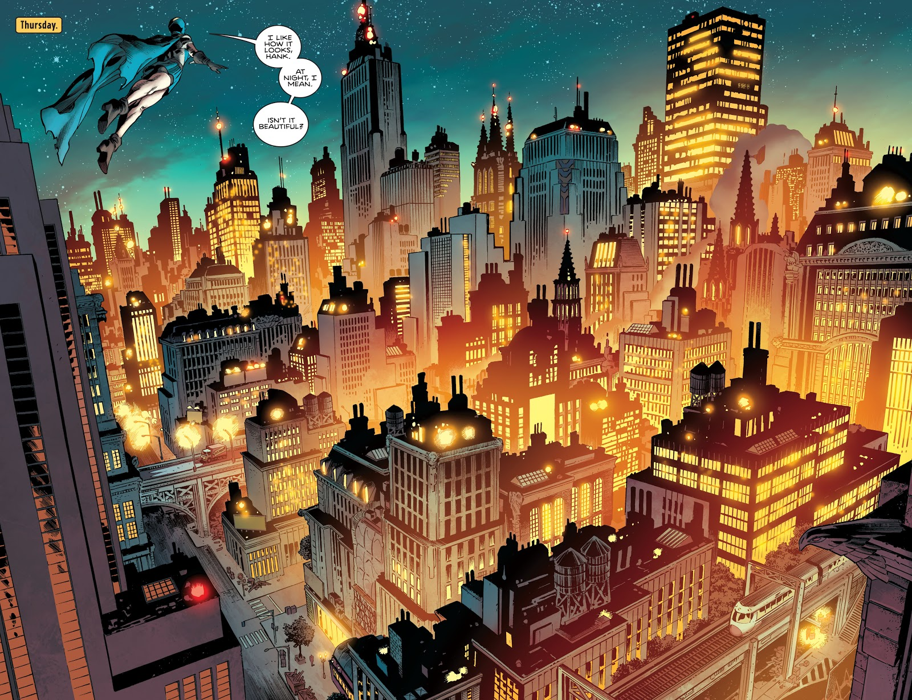
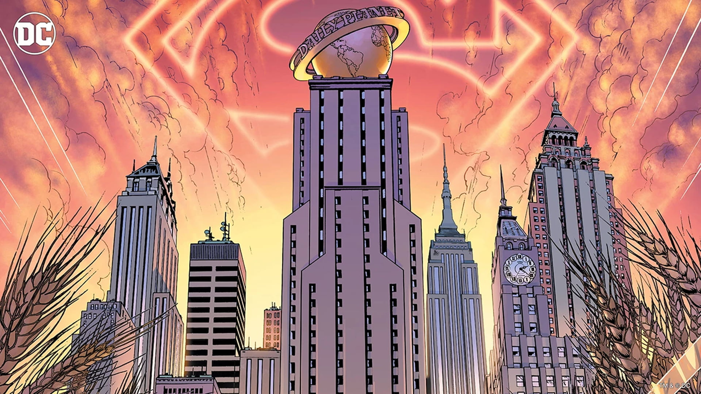

Gotham City, ou simplement Gotham, est une ville américaine fictive apparaissant dans les comic books américains publiés par DC Comics. Elle est surtout connue pour être le domaine de Batman. Gotham City fut identifiée comme résidence principale de Batman pour la première fois dans Batman no 4 (décembre 1940)
Source: wikipedia
Metropolis est une ville imaginaire qui est le lieu des aventures du super-héros Superman de DC Comics et qui figure pour la première fois dans Action Comics numéro 16, en 1939. Préalablement, en 1927, Fritz Lang avait imaginé une ville du même nom dans le film de science fiction éponyme Metropolis
Source: wikipedia
